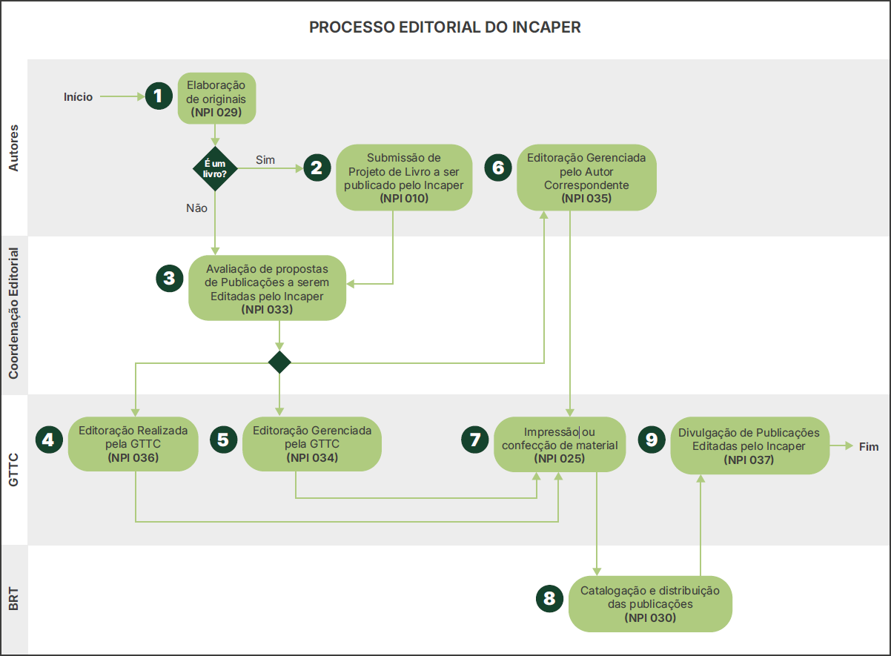
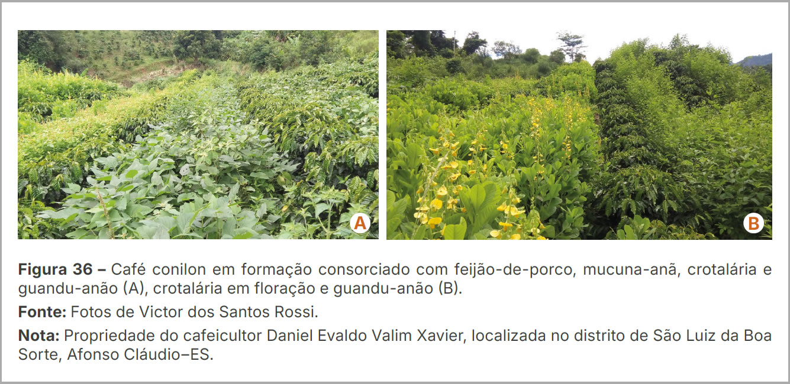
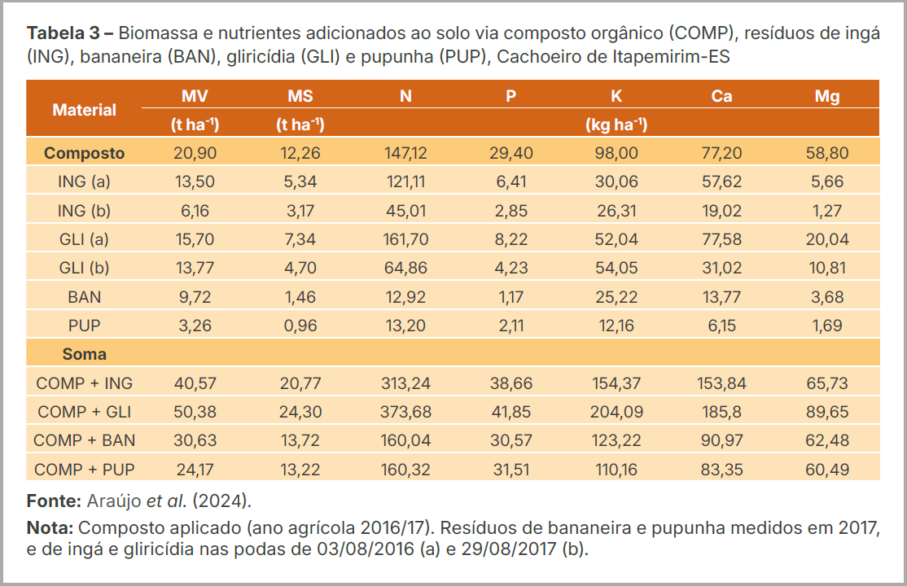
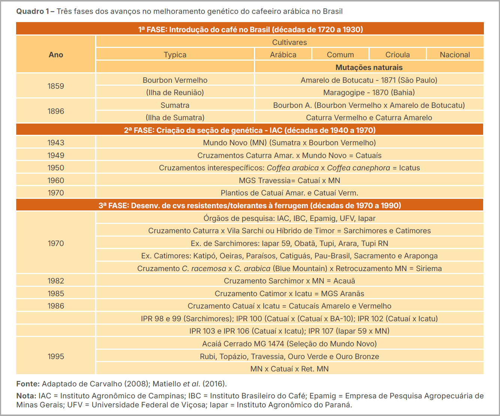
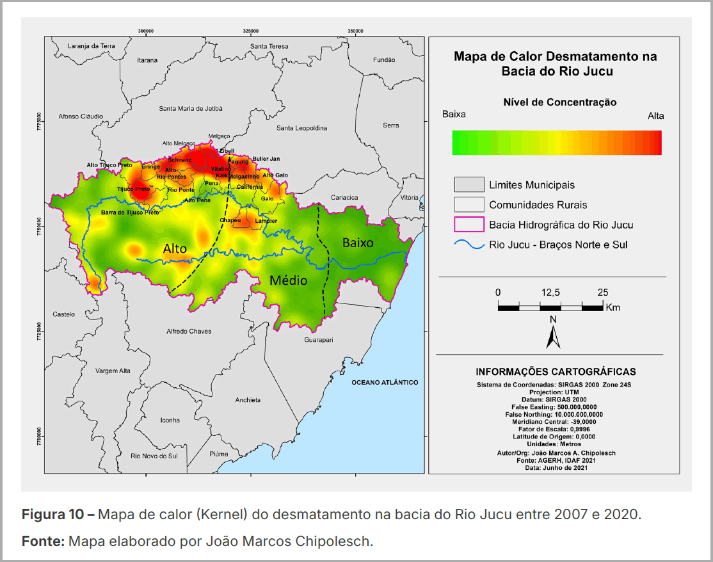

O Incaper, por meio da sua editora, publica produtos editoriais elaborados com base nas ações desenvolvidas e nos resultados alcançados por meio do seu programa de pesquisa, de assistência técnica e de extensão rural, atendendo exclusivamente às suas demandas internas. Esses produtos editoriais devem ser propostos por autores que sejam servidores do Instituto, admitindo-se a participação de profissionais externos ou instituições, como autores e coautores, em temas pertinentes à área de atuação do Incaper.
Para alcançar os fins desejados, uma das ações desenvolvidas foi mapear e desenhar o Processo Editorial do Incaper, reunindo as atividades envolvidas e os respectivos responsáveis por sua execução, com o apoio de ferramentas tecnológicas. Esse processo é composto pelas seguintes etapas:
- Elaboração e submissão dos originais ou projeto de livro pelos autores;
- Avaliação da proposta de publicação;
- Editoração;
- Impressão (quando for o caso);
- Catalogação, divulgação e distribuição.
Essas etapas são desenvolvidas de acordo com a Política Editorial do Incaper, com as Normas de Procedimento Internas (NPIs) e com as orientações contidas neste manual.
As etapas do Processo Editorial do Incaper são apresentadas a seguir (Figura 1).

5.1 Procedimentos operacionais
Para orientar as equipes envolvidas nas atividades que compõem o processo editorial, foram mapeados, desenhados e descritos os procedimentos operacionais referentes a cada etapa acima identificada, incluindo seus subprocessos, contidos nas NPIs apresentadas a seguir.
5.1.1 Elaboração de originais
Esta norma (NPI 029) compreende orientações relacionadas às atividades de produção do original pelos autores e sua submissão à Coordenação Editorial.
Estas orientações têm como público-alvo os servidores interessados em publicar originais pelo Incaper, bem como os demais servidores envolvidos com as atividades editoriais.
A NPI 029 apresenta, de forma detalhada, todas as atividades referentes ao processo de elaboração de originais. Identificada a oportunidade de produção de conteúdo para publicação, os autores devem observar principalmente as seguintes orientações:
- Definir os objetivos, o público-alvo, a linha editorial e o veículo mais adequado para a publicação a ser produzida;
- Certificar-se de que o conteúdo a ser abordado está compatível com a temática pretendida, no caso de publicações de temas multidisciplinares;
- Definir potenciais autores e coautores do quadro do Incaper ou de instituições parceiras, com formação e experiência para cada área de conhecimento envolvida;
- Manter em arquivo todas as figuras originais (gráficos, ilustrações, mapas, fotos, fluxogramas, infográficos, entre outros) utilizadas no texto;
- Avaliar a necessidade de impressão da publicação e elaborar, quando necessário, um plano de distribuição dos exemplares.
5.1.2 Submissão de projeto de livro a ser publicado pelo Incaper
Esta norma (NPI 010) tem como objetivo orientar os servidores do Instituto sobre os procedimentos padronizados para submissão de projeto de livro à Coordenação Editorial do Incaper.
Estas orientações têm como público-alvo os servidores interessados em submeter projeto para publicação de livros pelo Instituto, sejam como organizadores, autores, coautores ou participantes de quaisquer das etapas de aprovação do projeto.
É importante destacar que antes da elaboração do original, o Autor Correspondente ou organizador deve submeter à Coordenação Editorial um projeto de livro para avaliação prévia pelo Conselho Editorial do Incaper.
A NPI 010 apresenta, de forma detalhada, todas as atividades do processo de submissão de projeto de livro. Contudo, destacamos dois importantes pontos a serem observados pelos autores ou organizadores quanto à elaboração do projeto:
- Selecionar subtemas relacionados à temática principal, nos casos de livro com autoria coletiva;
- Organizar os capítulos dentro de uma linha editorial única, mesmo que a publicação aborde subtemas diversos.
5.1.3 Avaliação de proposta de publicações editadas pelo Incaper
Esta norma (NPI 033) tem como objetivo orientar os servidores do Instituto sobre os procedimentos padronizados a serem utilizados ao avaliar originais submetidos à Coordenação Editorial.
Estas orientações têm como público-alvo os servidores envolvidos na análise dos originais quanto às normas editoriais, no seu encaminhamento aos consultores ad hoc, bem como os autores na análise da viabilidade técnica para realização dos ajustes sugeridos.
A NPI 033 apresenta, de forma detalhada, todas as atividades do processo de avaliação de proposta de publicações editadas pelo Incaper. Contudo, destacamos alguns importantes pontos a serem observados:
1Pela Coordenação Editorial:
- Analisar se o original e os documentos complementares recebidos estão de acordo com a Política Editorial, as Normas de Procedimento Internas e este manual.
- Conferir se todas as figuras (gráficos, ilustrações, mapas, fotos, fluxogramas, infográficos, entre outros) que fazem parte do original, a ser analisado, foram enviadas pelo Autor Correspondente. Em seguida, deve encaminhá-las para avaliação prévia da equipe de design (ver item 5.2.6).
- Selecionar consultores ad hoc com formação e experiência compatível com o conteúdo do original.
2Pelos autores correspondentes:
- Avaliar, em conjunto com os demais autores, a viabilidade técnica dos ajustes sugeridos.
5.1.4 Editoração
A fase de editoração é parte do Processo Editorial do Incaper e consiste em etapas que vão da revisão de texto e do design editorial (tratamento de imagens, projeto gráfico e diagramação), até o fechamento do arquivo para impressão e/ou publicação no formato digital. Pode ser realizada de três formas distintas:
- a) Editoração realizada pela GTTC (NPI 036): quando o serviço de editoração é realizado pela Equipe de Revisão Textual e Design Editorial da GTTC ou bolsistas sob sua coordenação.
- b) Editoração gerenciada pela GTTC (NPI 034): quando o serviço de editoração é prestado por empresa contratada pelo Incaper. O serviço pode ser prestado de forma parcial ou integral por profissionais fora do Instituto. Neste caso, a Equipe de Revisão Textual e Design Editorial da GTTC atua na coordenação das atividades, responsabilizando-se pela orientação dos profissionais e pela avaliação e aprovação da publicação entregue.
- c) Editoração gerenciada pelo Autor Correspondente (NPI 035): quando o serviço de editoração é contratado e pago diretamente por coordenadores de projetos de base individual (Seag, Fapes e outros). Nesse caso, a Equipe de Revisão Textual e Design Editorial da GTTC atua na coordenação das atividades, fornecendo orientações técnicas para contratação, orientando os prestadores do serviço, avaliando e aprovando a publicação entregue.
As NPIs 034, 035 e 036 apresentam, detalhadamente, todas as atividades do processo de editoração de publicações editadas pelo Incaper. Contudo, destacamos alguns importantes pontos a serem observados pelos autores e pela GTTC:
- A partir do momento em que se inicia a editoração, as alterações textuais devem ser restritas apenas àquelas indicadas pela revisão textual, não podendo haver mais alterações de conteúdo.
- As figuras (gráficos, ilustrações, mapas, fotos, fluxogramas, infográficos, entre outros) entregues para editoração devem estar na resolução e com as demais especificidades indicadas pelo Designer (ver item 5.2.6). Caso haja necessidade de substituição de alguma figura, o Autor Correspondente deve fazê‑la no menor espaço de tempo possível.
- O Autor Correspondente deve avaliar e aprovar tanto a revisão textual quanto a publicação diagramada com agilidade. No caso de obra coletiva ou em coautoria, deverá avaliar e aprovar com os demais autores.
- É importante que todos os autores assumam o compromisso de não disponibilizar para terceiros as versões preliminares da publicação. Isso significa que os autores não podem compartilhar a versão final antes de estar disponibilizada no site da biblioteca do Incaper (Biblioteca Rui Tendinha - BRT), divulgada nas redes sociais institucionais e/ou em eventos de seu lançamento.
5.1.4.1 Editoração realizada pela GTTC
Esta norma (NPI 036) apresenta orientações relacionadas às atividades de editoração, particularmente no que diz respeito às fases de revisão textual e design editorial realizadas internamente pela equipe da GTTC.
Essas orientações têm como principal público-alvo os servidores envolvidos com as atividades de editoração e o Autor Correspondente.
A NPI 036 apresenta, de forma detalhada, todas as atividades referentes ao processo de editoração realizada pela GTTC. Contudo, é importante destacar um importante ponto a ser observado pela Coordenação Editorial:
5.1.4.2 Editoração gerenciada pela GTTC
Esta norma (NPI 034) apresenta orientações relacionadas às atividades de editoração (revisão textual e design editorial) realizadas por empresa contratada pelo Incaper, coordenadas pela GTTC, com apoio técnico da Equipe de Revisão Textual e Design Editorial. A prestação de serviço pode ser realizada total ou parcialmente por meio de três alternativas:
- a) A revisão textual é realizada internamente pelo Revisor Textual da GTTC, e o design editorial por uma empresa contratada;
- b) Pode ocorrer a situação inversa, ou seja, a revisão textual é realizada por empresa contratada, e o design editorial pelo Designer da GTTC;
- c) Tanto a revisão textual quanto o design editorial são realizados por empresa contratada.
Essas orientações destinam-se principalmente aos servidores envolvidos nas atividades de editoração e ao Autor Correspondente.
A NPI 034 apresenta, de forma detalhada, todas as atividades referentes ao processo de editoração gerenciada pela GTTC. Contudo, é importante destacar alguns pontos a serem observados pela equipe da GTTC e pelo Autor Correspondente:
- O Designer deve solicitar à empresa contratada o projeto gráfico de acordo com as normas editoriais do Incaper para aprovação prévia pela GTTC e pelo Autor Correspondente antes da diagramação completa do conteúdo.
- É fundamental que o Autor Correspondente avalie o material revisado ou diagramado com agilidade, dando retorno aos profissionais envolvidos na editoração. No caso de obra em coautoria ou obra coletiva, o Autor Correspondente deve validar as decisões com os autores envolvidos para evitar problemas na aprovação final da publicação.
5.1.4.3 Editoração gerenciada pelo Autor Correspondente
Esta norma (NPI 035) apresenta orientações relacionadas às atividades de editoração (revisão textual e design editorial) realizadas por empresa contratada diretamente pelo Autor Correspondente ou coordenador de projeto, com recursos financeiros de projeto de base individual (Seag/Fapes e similares). Nesse caso, a Equipe de Revisão Textual e Design Editorial da GTTC auxilia o Autor Correspondente, na avaliação técnica e aprovação do serviço prestado.
Essas orientações têm como público-alvo o Autor Correspondente, o coordenador de projeto e servidores da GTTC envolvidos com as atividades de editoração.
A NPI 035 apresenta, de forma detalhada, todas as atividades do processo de editoração gerenciada pelo Autor Correspondente. Contudo, é importante destacar que o Autor Correspondente ou o coordenador do projeto responsável pela contratação deve observar principalmente as seguintes orientações:
- Solicitar à Coordenação Editorial/GTTC orientações quanto à correta descrição dos serviços a serem contratados externamente, minimizando problemas decorrentes de dimensionamento inadequado da proposta comercial, ou que estejam incompatíveis com a Política Editorial do Incaper.
- Solicitar ao prestador do serviço a proposta de projeto gráfico, para avaliação prévia pela equipe da GTTC e autores, antes da diagramação do conteúdo.
- Avaliar o mais rápido possível o material revisado ou diagramado, dando retorno aos profissionais envolvidos na etapa. No caso de obra coletiva ou em coautoria, validar sua decisão com os autores envolvidos para não ter problema na aprovação final da publicação.
- Enviar o documento completo diagramado à gerência da GTTC, após avaliação e validação dos autores, para aprovação do serviço prestado.
- Entregar os arquivos finais à equipe da GTTC, após a aprovação e conclusão da editoração, antes do pagamento do serviço, para que sejam posteriormente catalogados pela BRT.
- Aguardar a disponibilização da publicação no site da biblioteca do Incaper, bem como sua divulgação nas redes sociais institucionais e/ou em eventos de lançamento, antes de disponibilizá-la para terceiros. Isso significa que versões preliminares devem ter circulação restrita aos autores e à GTTC.
5.1.5 Impressão, confecção e recebimento de material gráfico
Esta norma (NPI 025) apresenta orientações relacionadas às atividades de solicitação de impressão e recebimento de material gráfico impresso.
Essas orientações têm como público-alvo os servidores do Incaper, envolvidos com as atividades de solicitação e encaminhamento de arquivos de publicações editadas pelo Incaper para impressão, bem como o recebimento do referido material. Pode ser realizada de três formas distintas:
- a) Impressão contratada pelo Incaper, com recursos gerenciados pela instituição;
- b) Impressão contratada por coordenador de projeto de base individual;
- c) Impressão contratada por instituições parceiras.
A NPI 025 apresenta, de forma detalhada, todas as atividades do processo. Contudo, é importante observar o seguinte:
Nas situações previstas nos itens “b” e “c”, é fundamental que o responsável pela contratação obtenha da GTTC as orientações quanto à correta descrição do serviço de impressão, pois envolve informações técnicas (tipo de impressão, especificação de papel, padrões de cores, tipo de encadernação, acabamento etc.).
5.1.6 Catalogação e distribuição de publicações
Esta norma (NPI 030) apresenta orientações relacionadas às atividades de recebimento, avaliação, catalogação e distribuição de publicações encaminhadas à Biblioteca Rui Tendinha (BRT).
Essas orientações têm como público-alvo os servidores do Incaper envolvidos com as atividades realizadas no âmbito da BRT.
A NPI 030 apresenta, de forma detalhada, todas as atividades do processo. Contudo, é importante destacar dois pontos:
- O arquivo digital da publicação a ser enviado para a biblioteca deve estar no formato e tamanho adequados ao sistema de informação. O sistema atual (Ainfo) comporta arquivos de até 72 megabytes.
- A BRT distribui as publicações impressas tomando como base o plano de distribuição entregue pelos autores. Havendo necessidade de mais exemplares, a solicitação deve ser enviada por e-mail (biblioteca@incaper.es.gov.br) com o título da publicação e a quantidade desejada. Havendo disponibilidade no estoque, o material será separado e ficará disponível por 20 dias para retirada.
5.1.7 Divulgação de publicações editas pelo Incaper
Esta norma (NPI 037) apresenta orientações relacionadas às atividades de lançamento das publicações editadas pelo Incaper.
Essas orientações têm como público-alvo os servidores envolvidos nas atividades voltadas para a divulgação inicial das publicações editadas pelo Incaper.
O lançamento pode ser realizado das seguintes formas:
- a) Divulgação padrão - realizada pela GTTC para todas as publicações, contemplando a veiculação de matérias jornalísticas, de vídeos e postagens em redes sociais;
- b) Divulgação especial - definida pelos autores, com apoio da GTTC, contemplando o lançamento da publicação por meio de evento, além da divulgação padrão.
A NPI 037 apresenta, de forma detalhada, todas as atividades referentes ao lançamento das publicações. Contudo, é importante que os autores e a GTTC observem principalmente as seguintes orientações:
- A discussão, a avaliação da necessidade e viabilidade de lançamento da publicação em evento e o seu planejamento deverão ocorrer durante o processo de editoração. Caso contrário, pode haver atraso na disponibilização da publicação para a sociedade.
- A produção de vídeos e de outras peças de divulgação também deve ser realizada durante o processo de editoração.
5.2 PRAZOS DO PROCESSO EDITORIAL
Os prazos durante a tramitação das propostas de publicação são definidos da seguinte forma:
- Coordenação Editorial – máximo de 20 dias úteis para avaliar o projeto, a contar do recebimento adequado dos documentos preliminares.
- Relator técnico – máximo de 10 dias úteis, a contar do recebimento do formulário específico, para emitir parecer sobre projeto de livro ou outro veículo de publicação, quando necessário.
- Consultores ad hoc – máximo de 20 dias úteis a partir do recebimento do convite para realizar a 1ª revisão dos originais. A 2ª revisão e parecer final devem ser concluídos em até 10 dias úteis, contados do recebimento dos originais.
- Autores – máximo de 10 dias úteis a partir do recebimento dos originais para realizar os ajustes sugeridos pelos consultores ad hoc e 5 dias úteis para aprovar o texto final para início da editoração.
Embora os prazos estabelecidos orientem o andamento das etapas editoriais, é possível solicitar prorrogação quando houver necessidade. Para isso, é necessário informar previamente à Coordenação Editorial, que analisará a viabilidade do ajuste conforme o cronograma de publicação.
5.3 ORIENTAÇÕES PARA PREPARAÇÃO DE ORIGINAIS
5.3.1 Orientações para citações (ABNT)
A citação é essencial para a produção de obras intelectuais, permitindo que uma informação seja extraída e faça referência a ideias de outros autores. De acordo com França e Vasconcellos (2019, p. 127), “as citações são trechos transcritos ou informações retiradas das publicações consultadas para a realização do trabalho”.
A correta utilização das citações é fundamental para garantir a integridade e a legitimidade do trabalho acadêmico. Ao fazer uma citação, é importante fornecer os créditos ao autor original e indicar a fonte de onde a ideia foi retirada.
A norma NBR 10520 estabelece a necessidade de que as citações estejam devidamente formatadas, com indicação do sobrenome do autor, ano de publicação e página. Dessa forma, seguindo as diretrizes da norma ABNT 10520, é possível garantir a qualidade e a integridade das obras intelectuais, bem como evitar problemas relacionados a plágio ou má atribuição de créditos.
As citações podem ser classificadas em:
- citação direta;
- citação indireta;
- citação de citação.
5.3.1.1 Localização
As citações devem estar, preferencialmente, no corpo do texto. No entanto, a NBR 10520 também permite que as citações possam ser apresentadas em outras partes do documento.
5.3.1.2 Regras gerais
- A fonte da informação extraída deve ser citada obrigatoriamente;
- A identificação da fonte da informação pode aparecer incluída no texto ou em nota de rodapé;
- As citações podem ser feitas das seguintes maneiras:
- pelo sobrenome do autor;
- pela pessoa jurídica (nome completo ou sigla da instituição);
- por instituição governamental da administração direta;
- pelo título (no caso de fontes sem autoria ou responsabilidade).
- Em todos os casos, devem-se usar letras maiúsculas e minúsculas, conforme define a ABNT;
- As citações devem conter as seguintes informações: autoria, seguido do ano e, sempre que possível, da página em que o trecho citado se encontra na obra original;
- As expressões em latim ou estrangeiras devem estar em itálico, como: apud, et al., ibid., entre outras.
5.3.1.3 Formas de citação
5.3.1.3.1 Citação direta
É a transcrição literal do texto do autor, reproduzindo exatamente como consta da fonte consultada.
A citações diretas podem ser apresentadas de duas formas:
- As citações diretas de até três linhas devem estar entre aspas duplas. Caso haja
citação dentro do texto citado, colocam-se aspas simples. Se o trecho transcrito já tiver
expressões ou palavras entre aspas, elas deverão ser transformadas em aspas simples.
Exemplo:
- As citações diretas com mais de três linhas devem estar em um parágrafo
independente, com recuo de 4 cm da margem à esquerda, ter espaçamento
simples e tamanho de fonte menor que a do texto e sem aspas.
Exemplo:
A segurança protetora é realizada quando as pessoas estão inseridas em uma rede social e institucional consolidada. Considera-se que quanto mais desamparadas estiverem as pessoas frente a um fenômeno natural, maiores as possibilidades desse fenômeno se transformar em desastres sociais e econômicos (Costa, 2006, p. 86).
5.3.1.3.2 Citação indireta
É a reprodução do conteúdo com as próprias palavras (paráfrase), sem reproduzir
literalmente o texto original, mas mantendo-se fiel às ideias do autor consultado.
Exemplo:
5.3.1.3.3 Citação de citação
É a transcrição de um autor citado por outro, quando não se teve acesso à obra
original. Nesse caso, deve ser mencionado primeiramente o autor, a data e a página
(se houver) do documento original, seguido da expressão apud e da indicação do
autor, da data e da página (se houver) da obra consultada.
Exemplo:
5.3.1.3.4Orientações adicionais
ADados obtidos por informação verbal
São informações obtidas por meio de canais informais, tais como palestras, debates, conferências, entrevistas, entre outros. Nesse caso, deve-se indicar a forma de obtenção da informação pela expressão “informação verbal” entre parênteses.
Vale ressaltar que os dados de autoria das informações obtidas devem ser indicados exclusivamente em nota de rodapé.
Exemplo:
1Comunicação pessoal - R. Serpa.
BOmissão de palavras
Quando houver retirada de partes do texto citado, no começo, meio ou fim, deve-se utilizar reticências entre colchetes para substituí-las.
Exemplo:
CAcréscimos, explicações ou comentários
Se houver necessidade de incluir informações no trecho original citado, os acréscimos devem ser apresentados entre colchetes.
Exemplo:
DErros e imprecisões
Caso o trecho original citado apresente palavras ou sentenças gramaticalmente incorretas, bem como outras incoerências, coloca-se “[sic]” após a falha identificada.
Exemplo:
Valendo-se da prerrogativa de ser uma atividade itinerante e de acontecer no espaço público, a feira livre caracteriza-se por estruturar-se numa ampla rede de relações sociais que mescla diversas gramáticas sociais e vale-se de regras tácitas. A dinâmica dá-se por meio de relações de cooperação e de competição. A amplitude dessa rede alarga-se para diversos lugares além daqueles nas quais [sic] as feiras livres se instalam e se corporifica [sic] no chão do cotidiano por meio de conversas entre vizinhos de banca, no burburinho e nos debates mais amplos (Sato, 2007, p. 101).
EDestaque de uma palavra ou trecho
a) grifo do autor original da obra citada
Quando o destaque já está presente no trecho original citado, indica-se o grifo utilizando a expressão “grifo do autor” entre parênteses no fim do trecho, após a indicação de autoria.
Exemplo:
“[...] Adquiri, por várias vezes, grande porção de sementes de vários productos [sic] de cultura fácil e vantajosa e as fiz distribuir gratuitamente. Ainda há pouco, quando estive no Rio de Janeiro, fiz aquisição de duas mil mudas e cinqüenta [sic] litros de sementes de uma excelente qualidade de café, o “Conillon”, estando todas elas já distribuídas [...]” (Monteiro, 1913, p. 172, grifo do autor).
b) grifo inserido por quem faz a citação
Quando o destaque não está presente no original, mas é feito por quem está citando o trecho, deve-se indicar o destaque com negrito, itálico ou aspas, seguido da expressão “grifo nosso” entre parênteses no fim do trecho, após a indicação de autoria.
Exemplo:
Mais de 90% da produção [de café] ocorre em países em desenvolvimento nas regiões subtropicais, onde as condições climáticas são favoráveis e a mão de obra é relativamente barata. Hoje, a grande maioria dos produtores de café do mundo - cerca de 20 a 25 milhões - são agricultores de pequena escala, em grande parte dependentes da mão de obra familiar não remunerada e do trabalho contratado durante a época de colheita. A produção de café representa uma parcela relativamente grande da renda anual dessas famílias, bem como uma fonte significativa de divisas para os países nos quais elas cultivam. Por essa razão, o mercado global de café e a política internacional e doméstica do café estão intrinsecamente ligados a questões de segurança de subsistência e pobreza (Eakin; Winkels; Sendzimir, 2008, p. 3, tradução e grifos nossos)4.
5.3.2 Orientações para referências (ABNT)
As referências constituem o conjunto de títulos, incluindo sites e documentos eletrônicos, que são efetivamente citados no corpo do texto e que contribuíram na elaboração do trabalho. As fontes das figuras (gráficos, ilustrações, mapas, fotos, fluxogramas, infográficos, entre outros) também devem fazer parte das referências As referências devem seguir a norma definida pela Associação Brasileira de Normas Técnica (ABNT), conforme NBR 6023:2025.
É importante não confundir com bibliografia, que é a lista de títulos consultados para a elaboração do trabalho, mas que não tenham sido citados diretamente no corpo do texto.
5.3.2.1 Localização
As referências em um documento podem aparecer no rodapé, no fim dos textos (partes ou seções), em lista de referências ou antecedendo resumos, resenhas, recensões, conforme a ABNT NBR 6028:2021, e erratas.
5.3.2.2 Regras gerais
- As referências devem estar em ordem alfabética (sistema autor-data) ou em ordem de citação no texto (sistema numérico);
- As referências, ordenadas em listas, devem ser padronizadas, o recurso tipográfico (negrito, itálico ou sublinhado) utilizado para destacar o título deve ser idêntico em todas as referências;
- O autor é toda pessoa física responsável pelo conteúdo intelectual ou autor‑entidade, como pessoa jurídica, evento, instituições, organizações, empresas, comitês, comissão, evento, entre outros;
- Os nomes dos autores (pessoa física) devem ser separados por ponto e vírgula, seguidos de espaço;
- O autor deve ser indicado pelo sobrenome com letras maiúsculas e minúsculas, seguido pelo prenome e sobrenome conforme o documento apresenta. Até três autores, é obrigatória a indicação de todos os nomes. A partir de quatro autores, é permitido indicar somente o primeiro autor, seguido da expressão et al.;
- Quando não houver autor, a entrada deve ser feita pelo título do material que está sendo usado. Nesse caso, a primeira palavra do título deve ser escrita em letras maiúsculas.
- Quando os autores forem corporativos (órgãos governamentais, empresas, associações, entre outros), a entrada deve ser feita pela forma conhecida como se apresenta no documento, seja por extenso ou abreviada (ex.: EMBRAPA, UNIVERSIDADE FEDERAL DO ESPÍRITO SANTO, IBGE etc.);
- Quando os autores forem corporativos (órgãos governamentais, empresas, associações, entre outros), a entrada deve ser feita pela forma como se apresenta no documento, seja por extenso ou abreviada, desde que seja a forma mais conhecida.
- Todos os documentos citados no texto devem fazer parte da lista de referências;
- As referências devem ser elaboradas em espaço simples, alinhadas à margem esquerda do texto e separadas entre si por uma linha em branco de espaço simples;
- O título da seção das referências não deve ser enumerado, diferentemente das demais seções;
- Para referência de documentos disponíveis na internet, deve-se registrar, além dos elementos essenciais, o endereço eletrônico, precedido da expressão Disponível em: e a data de acesso, precedida da expressão Acesso em:;
- As abreviaturas utilizadas nas referências devem estar de acordo com as normas da ABNT, conforme apresentado no Anexo A deste manual;
- As expressões em latim ou estrangeiras devem estar em itálico, como: In, et al., [s.l.], [s.n.], entre outras.
- Quanto ao destaque do título da publicação, este manual recomenda o uso do negrito, embora também seja aceitável empregar o itálico e o sublinhado. Independentemente do recurso tipográfico adotado, é fundamental que haja uniformidade em todas as referências ao longo da publicação.
5.3.2.3 Exemplos de referências
Livro
- Com até três autores:
TRAVAGLIA, L. C. Gramática e interação: uma proposta para o ensino de gramática. 12. ed. São Paulo: Cortez, 2008.
DADALTO, G. G.; BARBOSA, C. A. Zoneamento agroecológico para a cultura do café no estado do Espírito Santo. Vitória, ES: Seag – ES, 1997. 28 p. - Com quatro autores ou mais:
COSTA, M. R. da; FONSECA, J.; NUNES, L. P. M.; MATUCHEWSKI, P. Guia de Linguagem Simples. Vitória: Incaper, 2025.
KAHN, T. et al. O dia a dia nas escolas. São Paulo: Instituto Latino-americano das Nações Unidas para a Prevenção do Delito e Tratamento do Delinquente; Instituto Sou da Paz, 1999.
Parte de livro
LIBERATO, Y.; FULGÊNCIO, L. Um modelo de descrição da leitura. In: É possível facilitar a leitura: um guia para escrever claro. São Paulo: Contexto, 2007.
E-Book
VERDIN FILHO, A. C. et al. Manejo de podas para o café conilon: técnicas de formação e condução de lavouras. Vitória: Incaper, 2021. E-book. Disponível em: https://biblioteca.incaper.es.gov.br/digital/bitstream/123456789/4262/1/Doc282- manejodepodasdoconilon-Incaper.pdf. Acesso em: 26 jun. 2025.
Livro disponível na Internet
VERDIN FILHO, A. C. et al. Manejo de podas para o café conilon: técnicas de formação e condução de lavouras. Vitória: Incaper, 2021. Disponível em: https:// biblioteca.incaper.es.gov.br/digital/bitstream/123456789/4262/1/Doc282- manejodepodasdoconilon-Incaper.pdf. Acesso em: 26 jun. 2025.
Artigo de revista científica
BRAGANÇA, S. M.; CARVALHO, C. H. S. FONSECA, A. F. A. da; FERRÃO, R. G. “Emcapa 8111”, “Emcapa 8121”, “Emcapa 8131”: variedades clonais de café conilon lançadas para o Estado do Espírito Santo. Pesquisa Agropecuária Brasileira, v. 36, n. 5, p. 765-770, 2001.
MÉNDEZE, G. Origem, sentido e futuro dos direitos humanos: reflexões para uma nova agenda. Revista SUR: Revista Internacional de Direitos Humanos, São Paulo, v. 1, n. 1, p. 12, 2004. https://doi.org/10.1590/S1806-64452004000100002
Artigo de revista científica em meio eletrônico
RIBEIRO, P. S. G. Adoção à brasileira: uma análise sociojurídica. Dataveni@, São Paulo, ano 3, n. 18, ago. 1998. Disponível em: http://www.datavenia.inf.br/frame. artig.html. Acesso em: 10 set. 1998.
Trabalhos acadêmicos no todo
FERRÃO, R. G. Biometria aplicada ao melhoramento genético do café Conilon. 2004. 256 fls. Tese (Doutorado em Genética e Melhoramento) – Universidade Federal de Viçosa, Viçosa, MG, 2004.
Trabalhos acadêmicos em meio eletrônico
RODRIGUES, Ana Lúcia Aquilas. Impacto de um programa de exercícios no local de trabalho sobre o nível de atividade física e o estágio de prontidão para a mudança de comportamento. 2009. Dissertação (Mestrado em Fisiopatologia Experimental) – Faculdade de Medicina, Universidade de São Paulo, São Paulo, 2009.
Evento científico
CONGRESSO BRASILEIRO DE MEDICINA VETERINÁRIA, 32., 2005, Uberlândia. Anais [...]. Uberlandia, MG: Sociedade Brasileira de Medicina Veterinária, 2005.
INTERNATIONAL SYMPOSIUM ON CHEMICAL CHANGES DURING FOOD PROCESSING, 2., 1984, Valencia. Proceedings [...]. Valencia: Instituto de Agroquímica y Tecnología de Alimentos, 1984.
Evento científico em meio eletrônico
CONGRESSO ONLINE INTERNACIONAL FLORESTAL, 1., 2021, Vitória. Anais [...]. Vitória, ES : CONGRESSE.ME, 2021. Disponível em: https://biblioteca.incaper.es.gov. br/digital/bitstream/123456789/4252/1/coniflor.pdf. Acesso em: 3 abr. 2023.
Evento científico (em parte)
ALVES, F. de L. et al. Novas cultivares de laranjas para o município de Guaçuí, ES. In: XX CONGRESSO BRASILEIRO DE FRUTICULTURA, 20., 2008, Vitória. Anais [...]. Vitória, ES: Centro de Convenções, 2008.
Evento científico em meio eletrônico (em parte)
MATOS, E. da S.; Antonio, D. B. A.; RODRIGUES, R. Estoques de carbono e nitrogênio do solo em área de SAF e floresta nativa. In: CONGRESSO BRASILEIRO DE SISTEMAS AGROFLORESTAIS, 10., 2016, Cuiabá. Anais [...] SAF: aprendizados, desafios e perspectivas. Cuiabá: SBSAF, 2016. Disponivel em: https://www. embrapa.br/busca-de-publicacoes/-/publicacao/1066260/estoques-de-carbono-enitrogenio- do-soloem-area-de-saf-e-floresta-nativa. Acesso em: 22 set. 2022.
Legislação
BRASIL. Lei nº 9.610, de 19 de fevereiro de 1998. Altera, atualiza e consolida a legislação sobre direitos autorais e dá outras providências. Diário Oficial da União: seção 1, Brasília, DF, 20 fev. 1998.
Legislação em meio eletrônico
BRASIL. Lei nº 12.527, de 18 de novembro de 2011. Regula o acesso a informações previsto na Constituição Federal; e dá outras providências. Diário Oficial da União: seção 1, Brasília, DF, 18 nov. 2011. Disponível em: https://www.planalto.gov.br/ ccivil_03/_ato2011-2014/2011/lei/l12527.htm. Acesso em: 5 jul. 2024.
Normas
ASSOCIAÇÃO BRASILEIRA DE NORMAS TÉCNICAS. ABNT NBR 10520 – informação e documentação - citação em documentos - apresentação. Rio de Janeiro, 2023.
Publicação periódica no todo
BOLETIM DA CONJUNTURA AGROPECUÁRIA CAPIXABA. Vitória: Incaper, jul./dez. 2023. ISSN: 2764-6238.
Publicação periódica no todo em meio eletrônico
INCAPER EM REVISTA. Vitória: Incaper, janeiro a dezembro de 2024. ISSN 21795304 versão online. DOI: 10.54682/ier.V15. Disponível em: https://revista. incaper.es.gov.br/index.php/ojs/issue/view/10. Acesso em: 13 jun. 2025.
Artigo de publicação periódica
GUIMARÃES, L. A. de O. P; MENDONÇA, G. C. de. Agricultura sintrópica (agrofloresta sucessional): fundamentos e técnicas para uma agricultura efetivamente sustentável. Incaper em Revista, v. 10, p. 6-21, 2019.
Artigo de publicação periódica em meio eletrônico
GUIMARÃES, L. A. de O. P; MENDONÇA, G. C. de. Agricultura sintrópica (agrofloresta sucessional): fundamentos e técnicas para uma agricultura efetivamente sustentável. Incaper em Revista, v. 10, p. 6-21, 2019. Disponível em: https://biblioteca.incaper.es.gov.br/digital/bitstream/123456789/3957/1/Incaper-em- Revista-2019.pdf. Acesso em: 27 jun. 2025.
5.3.3 Orientações para figuras
Figuras são elementos usados para enriquecer o texto, tais como gráficos, ilustrações, mapas, fotos, fluxogramas, infográficos, entre outros. Devem ser citadas no texto, inseridas o mais próximo possível do trecho a que se referem e identificadas com a palavra “Figura”.
As figuras devem seguir as seguintes especificações:
- Conter uma legenda clara, breve e objetiva, com ponto final e tamanho de fonte 11 (ou um ponto abaixo do tamanho da fonte utilizada no corpo de texto). A legenda deve ser precedida da palavra designativa “Figura”, numerada consecutivamente com algarismos arábicos, em negrito e na ordem de sua ocorrência no texto, separada por traço meia-risca (Figura 1 –);
- Conter, obrigatoriamente, a fonte de onde foram extraídas. Essas informações devem estar localizadas abaixo da legenda e grafadas em tamanho de fonte 11 (ou um ponto abaixo do tamanho da fonte utilizada no corpo de texto) e com espaçamento simples entre linhas e alinhamento justificado. A palavra “Fonte” deve ser grafada em negrito, separada por dois pontos (Fonte:);
- Apresentar, quando necessárias, notas explicativas em tamanho de fonte 11 (ou um ponto abaixo do tamanho da fonte utilizada no corpo de texto), com espaçamento simples entre linhas. A palavra “Nota” deve ser grafada em negrito, separada por dois pontos (Nota:). Devem ser posicionadas abaixo da figura, seguindo a ordem: legenda, fonte (quando houver) e, por fim, nota explicativa (Figura 2).

Fonte: Fotos de Victor dos Santos Rossi.
5.3.4 Orientações para tabelas
As tabelas são geralmente utilizadas para dados quantitativos, ou seja, informações predominantemente estatísticas nas quais o dado numérico se destaca como elemento central. As tabelas são abertas, ou seja, não devem ter linhas verticais nem bordas laterais fechadas. A localização da tabela deve ser o mais próximo possível do trecho do texto a que se refere ou conforme a apresentação gráfica do trabalho e identificada pela palavra “Tabela”.
As tabelas devem seguir as seguintes especificações:
- Ser citadas no texto em ordem numérica sequencial, podendo estar entre parênteses ou integradas ao texto;
- A palavra “Tabela” deve ser posicionada na parte superior, seguida do seu número de ordem (em algarismos arábicos) e traço meia-risca, em negrito (Tabela 1 –). Em seguida, apresentar o título explicativo, sem ponto final. Toda essa identificação deve ser apresentada em fonte tamanho 11 (ou um ponto abaixo do tamanho utilizado no corpo do texto).
- Indicar, na parte inferior, logo após a tabela, quando for o caso, a fonte consultada. Essa informação deve ser grafada em tamanho 11 (ou um ponto abaixo do tamanho da fonte utilizada no corpo de texto) e o espaçamento entre linhas deve ser simples. A palavra “Fonte” deve ser grafada em negrito, separada por dois pontos (Fonte:);
- Apresentar, quando necessárias, notas explicativas grafadas em tamanho de fonte 11 (ou um ponto abaixo do tamanho da fonte utilizada no corpo de texto), com espaçamento simples entre linhas. A palavra “Nota” deve ser grafada em negrito, separada por dois pontos (Nota:). Devem ser posicionadas na parte inferior da tabela, logo abaixo da fonte (quando houver);
- Incluir, no caso de tabelas extensas que ocupem mais de uma folha, os termos “(continua)”, “(continuação)” e “(conclusão)” sempre acima da borda superior direita, conforme a situação: na primeira folha, utiliza-se “(continua)”; nas folhas subsequentes, reapresenta-se o cabeçalho acompanhado do termo “(continuação)”; e, na última folha, além do cabeçalho, insere-se o termo “(conclusão)”.
A Figura 3, a seguir, ilustra essas orientações:

Fonte: Araújo et al. (2024).
5.3.5 Orientações para quadros
Os quadros são utilizados para apresentar dados qualitativos, ou seja, informações cujo teor é descritivo, e não estatístico. Os quadros são compostos de linhas verticais e horizontais e apresentam formato fechado, com moldura em torno de suas linhas e colunas. A localização do quadro deve ser o mais próximo possível do trecho do texto a que se refere ou conforme a apresentação gráfica do trabalho e deve ser identificado com a palavra “Quadro”.
Os quadros devem seguir as seguintes especificações:
- Ser citados no texto em ordem numérica sequencial, podendo estar entre parênteses ou integrados ao texto.
- Apresentar, na parte superior, a palavra “Quadro”, seguida do seu número de ordem (em algarismos arábicos) e traço meia-risca, em negrito (Quadro 1 –). Em seguida, apresentar o título explicativo, sem ponto final. Toda essa identificação deve ser apresentada em fonte tamanho 11 (ou um ponto abaixo do tamanho utilizado no corpo do texto).
- Indicar, na parte inferior e logo após o quadro, quando for o caso, a fonte consultada. A informação deve ser grafada em tamanho 11 (ou um ponto abaixo do tamanho da fonte utilizada no corpo de texto), com espaçamento simples entre linhas. A palavra “Fonte” deve ser grafada em negrito, separada por dois pontos (Fonte:).
- Apresentar, quando necessárias, notas explicativas grafadas em tamanho de fonte 11 (ou um ponto abaixo do tamanho da fonte utilizada no corpo de texto), com espaçamento simples entre linhas. A palavra “Nota” deve ser grafada em negrito, separada por dois pontos (Nota:).
- Em quadros extensos que ocupem mais de uma folha, deve-se indicar “(continua)” na primeira, repetir o cabeçalho e inserir “(continuação)” nas seguintes e, na última, acrescentar “(conclusão)”. Os termos devem ser posicionados acima da borda superior direita.
A Figura 4, a seguir, ilustra essas orientações:

Fonte: Adaptado de Carvalho (2008); Matiello et al. (2016).
5.3.6 Orientações para envio de figuras, tabelas e quadros
As figuras, além de posicionadas no corpo do texto, devem ser numeradas de acordo com a ordem de apresentação no texto e enviadas em JPG, com alta resolução e em uma pasta separada. Não serão aceitas figuras que somente estiverem disponíveis no corpo do texto, uma vez que não apresentam qualidade mínima exigida para a diagramação.
Recomendamos que as fotos das páginas internas (miolo) tenham, no mínimo, 1 MB, e as fotos para a capa, 5 MB. Para verificar o tamanho da foto, clique com o botão direito do mouse sobre ela, vá em “propriedades” e verifique a informação “tamanho”.
Os gráficos criados pelo autor devem ser enviados em JPG e no software em que foram gerados, assim como as demais figuras.
As figuras, tabelas e quadros devem ser enviadas através do e-mail coordenacaoeditorial@incaper.es.gov.br ou de sites de transferência de arquivos, tais como Wetransfer, Google Drive, OneDrive, entre outros.
5.3.7 Créditos de autoria e de fontes de figuras, tabelas e quadros
Nos termos da Lei dos Direitos Autorais (LDA), nº 9.610, de 19 de fevereiro de 1998 (Brasil, 1998), devem ser dados os créditos de autoria nos casos de uso de imagens produzidas por terceiros.
Figura extraída de outra obra
Exemplos:
- Na íntegra
Fonte: Siqueira et al. (2020). - Adaptada de outra obra
Fonte: Adaptado de Correia et al. (2020).
Fonte: Criada pelo autor com dados extraídos de Santana (2006, p. 72).
Figura produzida pelos próprios autores

Fonte: Adaptado de Carvalho (2008); Matiello et al. (2016).
Neste caso, também há outras formas de apresentar a autoria.
Exemplos:
- Fonte: Gráfico elaborado por [nome do autor].
- Fonte: Acervo pessoal/Acervo do Incaper.
- Fonte: Arquivo pessoal.